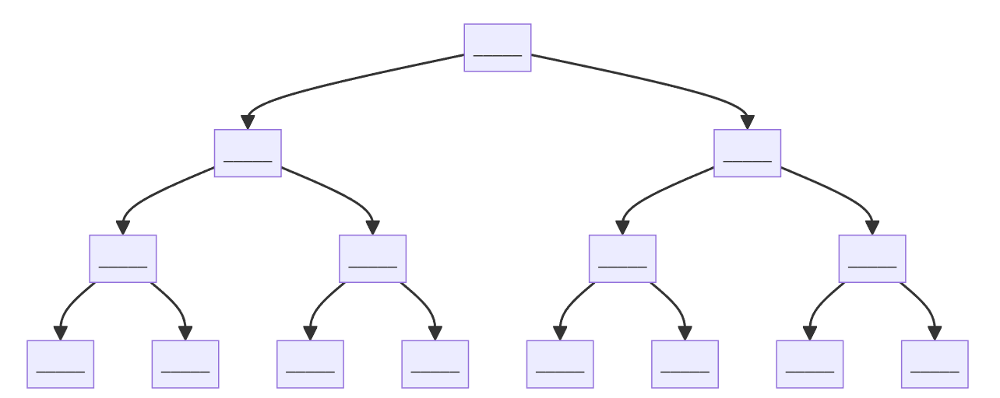

Activité sur les arbres binaires de recherche
On veut créer un dictionnaire un peu particulier qui permette de retrouver très rapidement un mot. On propose un fonctionnement un peu particulier : Plutôt que de stocker les mots dans une liste, les mots sont stockés les uns par rapport aux autres.
Pour cela, on va definir quelques règles : * Les mots sont rangés par ordre alphabétique * Chaque mots peut avoir jusqu'à deux mots associés : un mot plus petit et un mot plus grand * Le mot associé à gauche est plus petit que le mot courant * Le mot associé à droite est plus grand que le mot courant * Tous les mots vont partir d'un mot initial
Voilà un schéma pour placer les mots :

-
Placez les mots suivants dans le dictionnaire :
- maison
- lapin
- pomme
- arbre
- chat
- abeille
- navire
- oiseau
Maintenant pour s'assurer qu'il soit utilisable, on verifier que les mots sont bien rangés par ordre alphabétique. En lisant les mots de gauche à droite, on doit avoir un ordre croissant. Sinon, c'est qu'il faut verifier une dernière règle : Tous les mots à gauche d'un mot doivent être plus petits que lui et tous les mots à droite d'un mot doivent être plus grands que lui. Si ce n'était pas déjà le cas, on peut réorganiser les mots pour que ce soit le cas.
-
Quelle règle faut-il suivre pour ajouter un mot dans le dictionnaire ? Ecrivez un algorithme en pseudo-code qui permette d'ajouter un mot dans le dictionnaire.
-
On peut maintenant chercher un mot dans le dictionnaire. Ecrivez un algorithme en pseudo-code qui permette de chercher un mot dans le dictionnaire.
Une fois que vous avez écrit l'algorithme, donnez votre algorithme à un camarade et demandez lui de chercher un mot dans le dictionnaire. Il choisi un mot et tente de le retrouver grâce à votre algorthme. A chaque étape, il détaille ce qu'il fait jusqu'à ce qu'il trouve le mot ou qu'il ne le trouve pas.
Si il n'arrive pas à trouver le mot, vous pouvez réfléchir ensemble à comment corriger l'algorithme.
-
Un mot peut-il être présent à plusieurs endroits dans le dictionnaire ?
-
Peut-on utiliser ce dictionnaire avec autre chose que des mots ? Qu'est ce qui est nécessaire pour pouvoir utiliser ce dictionnaire ?
-
Au vu de la forme du dictionnaire, au maximum combien de mots peut-on ranger dans le dictionnaire en fonction de la hauteur du dictionnaire ? (On appelle hauteur du dictionnaire le nombre d'étages du dictionnaire).
-
Comparons avec un dictionnaire classique. En supposant qu'on lise les mots un par un, les uns à la suite des autres dans un dictionnaire classique, combien d'étapes faut-il faire pour retrouver un mot dans le dictionnaire ? (On l'exprimera en fonction du nombre de mots dans le dictionnaire).
-
Avec ce dictionnaire, combien d'étapes faut-il faire pour retrouver un mot dans le dictionnaire ? (On l'exprimera en fonction du nombre de mots dans le dictionnaire). Comparer avec la question précédente, que peut-on en conclure ?
Exercices
- On veut créer une classe
abr(pour arbre binaire de recherche) qui permette de stocker notre dictionnaire. Chaque abr possédera une valeurvaleuret deux arbres enfantsgaucheetdroite. On veut 2 constructeurs pour pouvoir créer un abr
- Créons une fonction
afficherqui permette d'afficher une représentation textuelle de l'arbre. Pour cela, on va afficher la valeur de l'arbre puis afficher l'arbre de gauche et l'arbre de droite. (Note : C'est ce qu'on appele un parcours infixe).
Pour tester votre fonction, vous pouvez créer un abr et l'afficher :
arbre = Abr("maison", Abr("lapin", None, None), Abr("pomme", Abr("arbre"), Abr("chat")))
arbre.afficher()
- On veut maintenant créer une fonction
ajouterqui permette d'ajouter un mot dans le dictionnaire à son bon emplacement.Il faut donc vérifier que le mot est bien placé par rapport aux autres mots. Si il est plus petit, il faut l'ajouter à gauche, sinon il faut l'ajouter à droite.
#--- HDR ---#bksl-nl# Code Python éxécuté sans être montré à l'élèvebksl-nl#--- HDR ---#bksl-nlbksl-nlclass abr():bksl-nl bksl-nl def ajouter(self, valeur):bksl-nl bksl-nl """ Ajoute la valeur dans l'arbre bksl-nl bksl-nl Paramètres:bksl-nl valeur : La valeur à ajouterbksl-nl bksl-nl CU: Aucunebksl-nlbksl-nl Exemple:bksl-nl >>> arbre = abr(5)bksl-nl >>> arbre.ajouter(2)bksl-nl """bksl-nl ...bksl-nl
- Verifiez que votre fonction
ajouterfonctionne bien en ajoutant les mots suivants :
arbre = Abr("maison")
mots = ["lapin", "pomme", "arbre", "chat", "abeille", "navire", "oiseau"]
for mot in mots:
arbre.ajouter(mot)
- On veut maintenant créer une fonction
chercherqui permette de chercher un mot dans le dictionnaire.